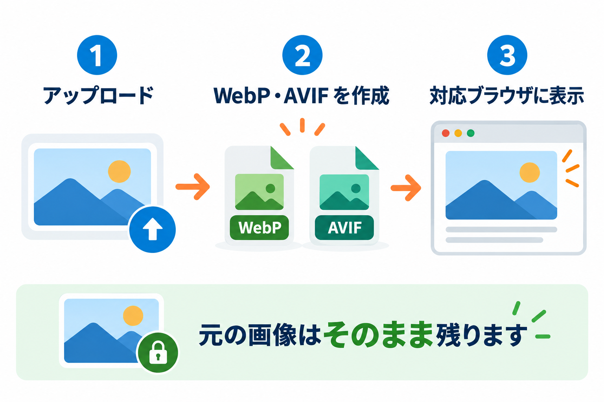

Kashiwazaki Next-Gen Images マニュアル

メディアライブラリの画像（JPEG・PNG・GIF・WebP）を、軽い次世代の画像形式 WebP・AVIF に変換し、対応しているブラウザにだけ軽い画像を表示する WordPress プラグインです。元の画像は削除も変更もしません。
画像はページの重さの大部分を占めることが多く、軽くすると表示が速くなる助けになります。このプラグインは、アップロードした画像の隣に WebP・AVIF のファイルを作り、ページの画像を「ブラウザが使える一番軽い形式」で表示するように切り替えます。対応していないブラウザには、これまでどおり元の画像を表示するので、表示が崩れることはありません。
主要機能
自動で変換
新しくアップロードした画像を、その場で WebP・AVIF に変換します。既存の画像も「一括変換」でまとめて変換できます。
軽い画像を表示
ブラウザが使える形式を AVIF → WebP → 元の画像の順に選んで表示します。サーバーの設定ファイルを書き換える必要はありません。
元の画像は安全
元の画像は削除も上書きもしません。いつでも元の表示に戻せます。ほかの画像最適化プラグインとも、表示が壊れないように共存します。

SEO / GEO における強み
SEO（検索エンジン）
画像を軽くすると、ページの読み込みが速くなる助けになります。表示速度は検索エンジンがページの使いやすさを見るときの要素の 1 つとされています。ただし、順位はほかの多くの要素で決まるため、このプラグインだけで順位が上がるとは限りません。
画像の切り替えは、元の画像の URL・代替テキスト（alt）・幅と高さをそのまま残したうえで行うので、画像検索向けの情報を損なわない作りです。サイトに出力するのは 1 行の CSS と小さなスクリプトだけで、ページの速度を落とさないようにしています。
GEO（AI 検索）
AI が参照するのは主にページの文章と HTML の構造です。このプラグインは文章や見出しを変えないため、AI 検索への影響は「ページが速く表示される」ことにとどまります。
目次
| ページ | 内容 |
|---|---|
| インストール・初期設定 | インストールから、最初に確認する設定、既存画像の変換まで |
| 設定タブ | 変換する形式・画質・自動変換・表示・詳細設定のすべての項目 |
| 一括変換タブ | 既存の画像をまとめて変換する・変換したファイルを削除する |
| 診断タブ | サーバーの対応状況・配信テスト・変換の実績の見方 |
| メディアライブラリ | 画像ごとの変換状態の見方と、1 枚ずつの変換 |
| サイトでの表示のしくみ | どの画像が切り替わり、どの画像が切り替わらないか |
| コマンドでの操作 | サーバーのコマンド（WP-CLI）で変換する方法 |
| トラブルシューティング | 困ったときの確認と対処、メッセージの意味 |
動作要件
| 項目 | 要件 |
|---|---|
| WordPress | 5.9 以上 |
| PHP | 7.4 以上 |
| 画像を作る機能 | PHP の GD または Imagick（どちらか一方で動きます） |
| AVIF | PHP 8.1 以上で AVIF に対応した GD、または AVIF に対応した Imagick が必要です。無ければ WebP だけで動きます |
| ブラウザ | どのブラウザでも表示できます（WebP・AVIF に対応していないブラウザには元の画像を表示します） |